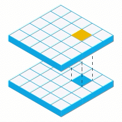

Tile Arithmetic¶
Rasterframes includes support for arithmetic operations across tiles,
calling the function on the cells that correspond to each other and
producing the result of these operations as a tile. For instance, given
a tile with pixels that are all 1’s and a tile whose pixels are all 2’s,
the result of a localAdd on those tiles would be a tile with pixel
values all set to 3. This example uses localAdd, but
localSubtract, localDivide, and localMultiply also exist.
While not used in this example, localAddScalar,
localSubtractScalar, etc can be uses to perform operations with a
scalar, as opposed to the local values in another tile. If using an
integer, Int must be appended to the function name, e.g.
localAddInt, localSubtractInt, etc.
Initial configs
In [1]:
from pyrasterframes import *
from pyrasterframes.rasterfunctions import *
import pyspark
from pyspark.sql import SparkSession
from pathlib import Path
spark = SparkSession.builder. \
master("local[*]"). \
appName("RasterFrames"). \
config("spark.ui.enabled", "false"). \
getOrCreate(). \
withRasterFrames()
resource_dir = Path('./samples').resolve()
filenamePattern = "L8-B{}-Elkton-VA.tiff"
def readTiff(name):
return spark.read.geotiff(resource_dir.joinpath(filenamePattern.format(name)).as_uri())
bandNumbers = range(1, 5)
bandColNames = ['band_{}'.format(n) for n in bandNumbers]
Once imported, join the tiles together based on a spatialKey.
In [2]:
from functools import reduce
joinedRF = reduce(lambda rf1, rf2: rf1.asRF().spatialJoin(rf2.drop('bounds').drop('metadata')),
[readTiff(b).withColumnRenamed('tile', 'band_{}'.format(b)) for b in bandNumbers])
New columns are added based on the results of these local functions.
localAdd adds corresponding cells, localDivide divides them,
localSubtractScalar subtracts a scalar from every cell in the input
tile, and localMultiplyScalar multiplies each cell by a scalar
value. There are also functions for comparison, such as
localEqualScalar, which sets the new cell to one if it equals a
scalar value, localGreaterEqualScalar, which sets a cell to one if
it is greater than or equal to a scalar, localLessScalar, etc. The
diagram below is an excellent example of local functions courtesy of
Geotrellis. This demonstrates localAdd with cell values being added
based on corresponding cells. 
In [3]:
addRF = joinedRF.withColumn("B1+B2", localAdd("band_1", "band_2")).asRF()
divideRF = joinedRF.withColumn("B1/B2", localDivide("band_1", "band_2")).asRF()
subConstantRF = joinedRF.withColumn("B1 = 10000", localEqualScalarInt("band_1", 10000)).asRF()
multScalarRF = joinedRF.withColumn("B1*2", localMultiplyScalarInt("band_1", 2)).asRF()
In [19]:
subScalarRF = joinedRF.withColumn("B1-100", localLessEqualScalar("band_1", 100.0)).asRF()
tileMax computes the max values of the cells in a tile, tileSum
computes the sum of all cells, tileMean finds the mean value, and
tileMin finds the minimum value.
In [20]:
subScalarRF.select(tileMean("B1-100"), tileMean("band_1")).show()
+----------------+-----------------+
|tileMean(B1-100)| tileMean(band_1)|
+----------------+-----------------+
| 0.0|9834.874785264363|
+----------------+-----------------+
In [8]:
addRF.select(tileMax("B1+B2"), tileMax("band_1"), tileMax("band_2")).show()
+--------------+---------------+---------------+
|tileMax(B1+B2)|tileMax(band_1)|tileMax(band_2)|
+--------------+---------------+---------------+
| 42925.0| 20778.0| 22147.0|
+--------------+---------------+---------------+
In [9]:
divideRF.select(tileSum("B1/B2"), tileSum("band_1"), tileSum("band_2")).show(1)
+--------------+---------------+---------------+
|tileSum(B1/B2)|tileSum(band_1)|tileSum(band_2)|
+--------------+---------------+---------------+
| 31389.0| 3.09149454E8| 2.806676E8|
+--------------+---------------+---------------+
In [12]:
subConstantRF.select(tileSum("B1 = 10000")).show()
+-------------------+
|tileSum(B1 = 10000)|
+-------------------+
| 17.0|
+-------------------+
In [11]:
multScalarRF.select(tileMin("B1*2"), tileMin("band_1")).show()
+-------------+---------------+
|tileMin(B1*2)|tileMin(band_1)|
+-------------+---------------+
| 18522.0| 9261.0|
+-------------+---------------+